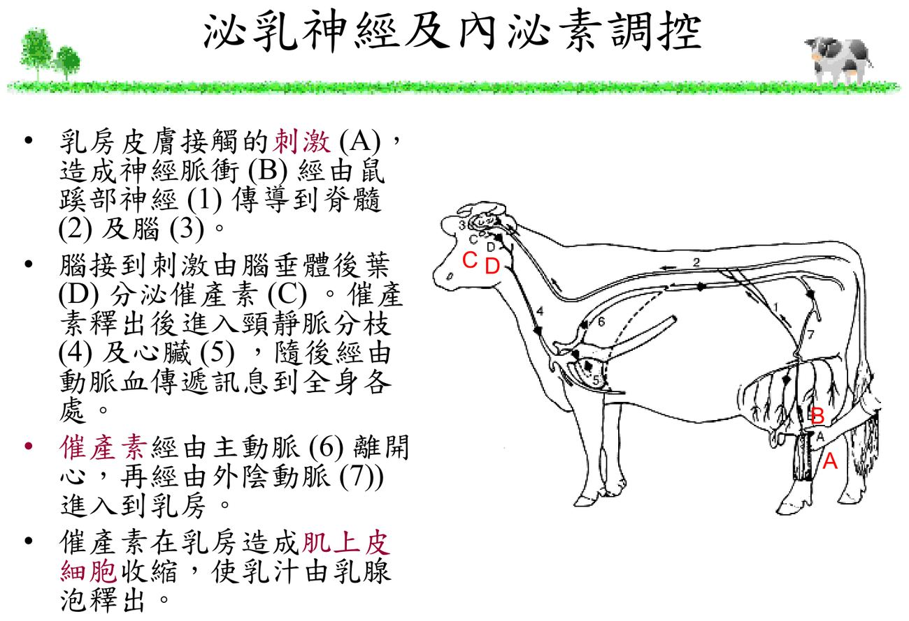

大方向與重點摘要
- 這章在講什麼
- 李國華老師乳房炎系列的基礎篇：乳房的四個系統、乳腺泡—乳管—乳頭的構造、乳頭管如何擋住細菌、乳腺發育的荷爾蒙，以及催產素控制的排乳反射與擠乳時機。乳房炎本身見乳房炎頁。
- 為什麼重要
- 乳房炎是乳牛場最大的經濟損失之一，而乳頭管是細菌進入乳房唯一的門；擠乳時機抓不準（刺激不足、過榨乳）會傷乳頭、留殘乳，都和乳房炎直接相關。
- 這章要抓的重點
-
- 四大系統：支持、分泌、乳管、血液淋巴與神經。
- 支持：中央懸韌帶（外觀上的乳溝）＋側懸韌帶＋結締組織；分房膜把乳房分成獨立的四個乳區。
- 分泌：乳腺泡（分泌細胞＋肌上皮細胞）→ 乳管 → 乳腺蓄乳池（約 400 mL） → 乳頭腔（30–40 mL） → 乳頭管；產 1 公斤乳需 400–500 公斤血液流過乳房。
- 乳頭管：括約肌關閉開口；角質層（keratin）像蠟一樣黏住細菌、阻止細菌往乳池移動。
- 乳腺發育：動情素、生長素、腎上腺皮質固醇 → 乳管生長；再加助孕素、泌乳素 → 乳腺泡生長；泌乳素＋腎上腺皮質固醇 → 分泌乳汁；首次懷孕後乳腺組織急速增加。
- 排乳反射：乳頭刺激 → 神經 → 下視丘 → 腦下垂體後葉分泌催產素 → 血液 → 乳房肌上皮細胞收縮；催產素分泌約 20–40 秒、作用持續 2–10 分鐘。
- 擠乳時機：從前榨刺激開始，催產素約 1 分鐘達高峰、維持數分鐘後下降；有前刺激的牛乳流快且平順；擠太久就是過榨乳。
- 容易混淆
- 乳腺蓄乳池（gland cistern，約 400 mL）vs 乳頭腔（teat cistern，30–40 mL）。催產素的「分泌時間」（20–40 秒）vs「作用時間」（2–10 分鐘）。肌上皮細胞負責把乳擠出乳腺泡（排乳），分泌細胞負責合成乳汁，兩者不同。
- 考試可能怎麼問
（推測） - 乳房四系統；懸韌帶與分房；乳管系統各部容量；乳頭管兩道防線；乳腺發育各階段的荷爾蒙；排乳反射路徑；催產素分泌與作用時間；為什麼擠乳前要前榨刺激、為什麼不能過榨乳；1 公升乳需多少血液。
內容以老師講義為主體（講義為 99 年乳牛乳房炎防治講習班教材，大多是圖）。標示「補充」的段落是講義以外的延伸；標示「推測」的是依講義強調處推測的出題方向，不是考古題。考試範圍以老師上課為準。圖片為老師講義截圖。
乳房的組成與支持系統 Udder & Supporting System
乳房是一個完整的器官：先看它怎麼「掛」在身上，再看裡面怎麼分成四區。
乳房的四大系統（p.3）必考
1. 支持系統
懸韌帶與結締組織
2. 分泌系統
乳腺泡、管道、乳頭
3. 乳管系統
乳管到乳頭管
4. 血液、淋巴與神經系統
供應原料、回收、排乳反射
支持系統（p.4–6）必考
- 骨盤與結締組織（連結乳房與腹壁）、側懸韌帶（p.4 剖面圖）。
- 中央懸韌帶：從中間把乳房吊起，外觀上的乳溝就是它的位置；後懸韌帶。
- 分房膜：把乳房分成左右、前後四個乳區。
- 外觀評估：前乳房附著、後乳房附著、前後乳房的分界。
補充：四個乳區的乳腺組織與乳管彼此獨立，所以乳房炎常只侵犯一個乳區，要分乳區檢查與採樣（見乳房炎頁）。中央懸韌帶鬆弛時乳溝消失、乳頭外翻，擠乳杯不好套、乳頭容易受傷。
分泌系統與乳管系統 Secretory & Duct System
乳汁在乳腺泡裡合成，一路經乳管匯到乳池；每做一公斤乳，要有幾百公斤血流過乳房。
分泌系統（p.7–9）必考
- 乳腺包括：(1) 乳腺泡、(2) 管道系統、(3) 乳頭。
- 要生產 1 公斤牛乳必須要 400–500 公斤的血液流過乳腺。
- 乳腺泡：分泌細胞（上皮細胞）圍成乳泡腔，外面包著肌上皮細胞與動靜脈微血管，接到乳管。
乳管系統（p.10）必考
補充：乳池裡的乳只佔總乳量的一小部分，大部分乳在乳腺泡與小乳管中，必須靠催產素讓肌上皮細胞收縮才擠得出來（見第 6 節）；所以沒有排乳反射時，擠完乳池那一點就沒了。
乳頭結構與乳頭管 Teat & Teat Canal
乳頭管是細菌進入乳房唯一的門，有兩道防線。
乳頭結構（p.11）理解
由內而外：乳頭腔、平滑肌、表皮層（皮膚）；末端是擴約肌與乳頭管。
乳頭管的兩道防線（p.12）必考
| 防線 | 作用 |
|---|---|
| 括約肌（sphincter muscle） | 讓開口保持關閉，把乳腺內部與外界隔離 |
| 角質層（keratin） | 一種蠟狀物質，黏住入侵的細菌，阻止細菌移動到乳池 |
擠乳後括約肌需要一段時間才會完全閉合，這段時間乳頭管是開的 → 所以擠乳後要藥浴乳頭，並讓牛站著吃東西不要馬上躺在墊料上。過榨乳、真空過高會傷害乳頭末端與角質層，等於拆掉防線。
乳腺的發育 Mammary Development
乳管先長、乳腺泡後長，首次懷孕才是爆發期；每一步都有不同的荷爾蒙。
各階段的荷爾蒙（p.13）必考
| 階段 | 荷爾蒙 |
|---|---|
| 乳管生長 | 動情素、生長素、腎上腺皮質固醇 |
| 乳小葉—乳腺泡生長 | 動情素、生長素、助孕素、泌乳素、腎上腺皮質固醇 |
| 牛乳分泌 | 泌乳素、腎上腺皮質固醇 |
| （停止泌乳後） | 萎縮性乳管（退化） |
「動情素長管、助孕素長泡」：乳管只要動情素（＋生長素、皮質固醇）；乳腺泡要再加上助孕素與泌乳素；真正分泌乳汁靠泌乳素＋皮質固醇。（記法為補充）
乳腺組織的生長曲線（p.14–15）理解
- 出生到性成熟（約 7 月齡）：緩慢增加。
- 受孕（約 15 月齡）後的首次懷孕期間：急速增加，到分娩時最多。
對照乳牛一生：13–15 月齡配種、24–26 月齡初產；這張曲線說明為什麼女牛期的營養與健康，直接影響第一胎的乳腺量。
泌乳的神經與內分泌調控 Milk Let-down
擠乳不是把乳池抽空，而是抓住催產素的那幾分鐘。
排乳反射的路徑（p.16–17）必考

催產素的時間（p.18–20）必考
- 催產素分泌持續約 20–40 秒；作用持續 2–10 分鐘（p.20）。
- 從乳頭刺激（前榨）開始，血中催產素約 1 分鐘內升到高峰，維持到約 4–5 分鐘後下降；圖中「搾乳時間」在 1–6 分鐘之間，超過就是過搾乳（p.18 圖判讀）。
- 擠乳前有刺激乳頭：乳流（藍線）在催產素（紅線）上升後順暢且集中；沒有刺激：乳流開始時有落差（先擠乳池的乳，再等排乳），整體較慢（p.19 圖判讀）。
- 乳汁貯存在乳腺泡、乳小管、大乳管、乳腺槽；1 公升乳須 400–500 公升血液供應（p.20）。
- 前榨刺激（也順便檢查乳汁），啟動排乳反射。
- 在催產素上來後、還在高峰時套杯（圖上約刺激後 1 分鐘）。
- 在催產素作用期間擠完，不要過搾乳（乳流已很少還繼續擠 → 傷乳頭末端與角質層）。
- 擠完藥浴乳頭（見乳頭管）。
補充：牛受驚嚇或疼痛時分泌的腎上腺素會讓乳房血管收縮、抑制催產素的作用，造成排乳不良與殘乳；所以擠乳環境要安靜、固定流程、不要打罵牛。
泌乳曲線（p.21）理解
典型泌乳曲線：分娩後乳量上升，約泌乳第 2 個月達高峰（約 26 kg/天），之後緩慢下降到第 10 個月（約 12 kg/天）。
對照泌乳分期：泌乳高峰在 DMI 還沒追上之前，所以產後前幾週是負能量平衡期。
賀爾蒙表格統整
把這一章出現的賀爾蒙放在同一處：發育（長大）、分泌（製造乳汁）、排乳（擠出來）是三個不同的階段。講義依據：p.13（發育）、p.16–20（排乳）。標 補充 者是講義沒寫、依教科書或共筆補充。
賀爾蒙總表
| 賀爾蒙 | 來源（補充） | 哪個階段 | 在這章的作用 | 為什麼 |
|---|---|---|---|---|
| 動情素 | 卵巢 補充 | 發育 | 乳管生長；乳腺泡生長也要 | 刺激乳管伸長、分枝，把「樹枝」長出來 |
| 生長素 | 腦下垂體前葉 補充 | 發育 | 乳管與乳腺泡生長都要 | 促進乳腺組織整體生長 |
| 助孕素 | 黃體、胎盤 補充 | 發育 | 只有乳小葉—乳腺泡生長要 | 和動情素合作，讓乳腺泡發育成熟；乳管生長不需要 |
| 泌乳素 | 腦下垂體前葉 補充 | 發育＋分泌 | 乳腺泡生長；牛乳分泌 | 促進乳腺泡發育，分娩後啟動、維持乳汁合成 |
| 腎上腺皮質固醇 | 腎上腺皮質 補充 | 發育＋分泌 | 乳管、乳腺泡、牛乳分泌三個階段都要 | 配合其他荷爾蒙維持乳腺發育與分泌（講義三列都有） |
| 催產素 | 下視丘合成、腦下垂體後葉釋放（講義寫腦下垂體後葉分泌） | 排乳 | 排乳反射：肌上皮細胞收縮，乳汁從乳腺泡釋出 | 只管「排出」，不管「製造」；分泌約 20–40 秒、作用 2–10 分鐘 |
| 腎上腺素 | 腎上腺髓質 補充 | 排乳（抑制） | 受驚嚇或疼痛時分泌，使乳房血管收縮、抑制催產素作用 | 造成排乳不良與殘乳；擠乳環境要安靜（共筆） |
階段 × 賀爾蒙對照（● ＝需要）
| 階段 | 動情素 | 生長素 | 助孕素 | 泌乳素 | 腎上腺皮質固醇 | 催產素 |
|---|---|---|---|---|---|---|
| 乳管生長 | ● | ● | — | — | ● | — |
| 乳小葉—乳腺泡生長 | ● | ● | ● | ● | ● | — |
| 牛乳分泌 | — | — | — | ● | ● | — |
| 排乳 | — | — | — | — | — | ●（腎上腺素抑制） |
這個矩陣依講義 p.13 的三列整理，加上排乳一列；考「乳小葉—乳腺泡比乳管多需要什麼」答案就是助孕素與泌乳素（兩列相減）。
容易混淆
| 容易混淆 | 怎麼分 |
|---|---|
| 發育 vs 分泌 vs 排乳 | 發育＝長出乳管與乳腺泡；分泌＝乳腺泡製造乳汁；排乳＝把做好的乳擠出來 |
| 泌乳素 vs 催產素 | 泌乳素管製造（前葉）；催產素管排出（後葉） |
| 動情素 vs 助孕素 | 乳管只要動情素（加生長素、皮質固醇）；乳腺泡要再加助孕素與泌乳素 |
| 腎上腺皮質固醇 vs 腎上腺素 | 前者（皮質）三階段都要、促進發育與分泌；後者（髓質）受驚嚇時分泌，抑制排乳 |
| 題目裡的干擾選項 | 胰島素、甲狀腺素、雄性素不在講義這一章的發育表裡（練習題 Q5、Q10–12 常見） |
整個過程串起來
- 青春期到首次懷孕：動情素讓乳管長出來；懷孕後助孕素加入，乳腺泡大量增生（首次懷孕期間乳腺組織急速增加）。
- 分娩後：泌乳素與皮質固醇讓乳腺泡開始分泌乳汁。
- 每次擠乳：刺激乳頭 → 神經 → 下視丘 → 腦下垂體後葉釋放催產素 → 肌上皮細胞收縮 → 乳汁排出。
- 牛受驚嚇：腎上腺素升高，抑制排乳。
考試方向（推測）
以下是依講義強調的內容推測的出題方向，不是考古題，考試範圍以老師上課為準。
| 可能考法 | 答題重點 |
|---|---|
| 乳房四系統 | 支持、分泌、乳管、血液淋巴神經 |
| 支持系統 | 中央懸韌帶（乳溝）、側懸韌帶、結締組織；分房膜分四乳區 |
| 分泌系統 | 乳腺泡（分泌細胞、肌上皮細胞）、管道、乳頭；1 kg 乳需 400–500 kg 血液 |
| 乳管系統容量 | 乳腺蓄乳池約 400 mL、乳頭腔 30–40 mL |
| 乳頭管防線 | 括約肌關閉開口；角質層蠟狀物黏住細菌 |
| 乳腺發育荷爾蒙 | 乳管：動情素、生長素、皮質固醇；乳腺泡：再加助孕素、泌乳素；分泌：泌乳素＋皮質固醇 |
| 排乳反射路徑 | 乳房刺激 → 鼠蹊部神經 → 脊髓 → 腦 → 腦下垂體後葉催產素 → 頸靜脈、心、主動脈、外陰動脈 → 肌上皮細胞收縮 |
| 催產素時間 | 分泌 20–40 秒、作用 2–10 分鐘；前榨後約 1 分鐘達峰 |
| 擠乳前刺激的好處 | 乳流順暢集中、縮短擠乳時間、避免過搾乳 |
練習題 Practice Quiz
乳房皮膚接觸（或仔牛吸吮、擠乳機聲音）刺激 → 神經脈衝經鼠蹊部神經 → 脊髓 → 腦（下視丘）→ 腦下垂體後葉分泌催產素 → 頸靜脈分枝 → 心臟 → 主動脈 → 外陰動脈 → 乳房 → 肌上皮細胞收縮，乳汁由乳腺泡釋出（p.16–17）。